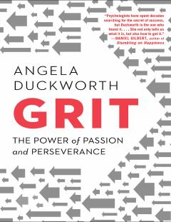

GTMuvaffaqiyatga erishishda iste'doddan ko'ra qat'iyat va ishtiyoq muhimroq ekanligi haqidagi ilmiy asar.
Ushbu kitob muvaffaqiyatga erishishda tug'ma iste'doddan ko'ra ko'proq ishtiyoq va qat'iyat muhimroq ekanligini ilmiy tadqiqotlar va hayotiy misollar orqali tushuntiradi. Muallif Angela Duckworth qat'iyatlilik (grit) tushunchasini tahlil qilib, uni qanday rivojlantirish va maqsadlarga erishishda qanday qo'llash bo'yicha amaliy strategiyalarni taqdim etadi.